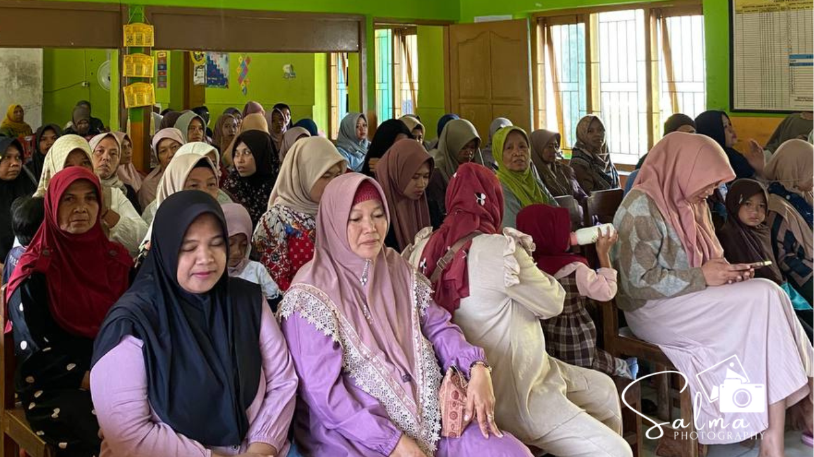

MI Salafiyatul Ma'muroh Paesan menggelar kegiatan Awalussanah sekaligus rapat penyampaian program kerja madrasah untuk Tahun Ajaran 2026/2027. Acara yang berlangsung dengan khidmat ini dilaksanakan pada hari ini, Rabu, 29 Juli 2026, bertempat di lingkungan madrasah dan dihadiri oleh segenap dewan guru serta seluruh wali murid.
Agenda utama kegiatan ini adalah memaparkan berbagai program unggulan dan rencana kegiatan akademik maupun non-akademik yang akan dijalankan selama satu tahun ajaran ke depan. Melalui pertemuan ini, pihak madrasah ingin menyamakan persepsi serta mempererat silaturahmi dengan para orang tua siswa demi mendukung kemajuan dan kelancaran proses pembelajaran anak-anak.
Kepala MI Salafiyatul Ma'muroh dalam sambutannya menyampaikan pentingnya sinergi dan kerja sama yang erat antara pihak sekolah dan wali murid. Beliau menegaskan bahwa keberhasilan pendidikan dan pembentukan karakter anak tidak hanya menjadi tanggung jawab guru di madrasah, tetapi juga memerlukan dukungan penuh serta pengawasan dari orang tua di rumah.
Acara ditutup dengan sesi tanya jawab dan diskusi interaktif antara wali murid dan pihak madrasah untuk menampung masukan serta saran yang membangun. Pihak madrasah berharap, melalui langkah awal yang baik ini, seluruh program kerja di Tahun Ajaran 2026/2027 dapat terlaksana dengan sukses dan membawa MI Salafiyatul Ma'muroh menjadi lembaga pendidikan yang semakin berprestasi.
← Kembali ke Beranda